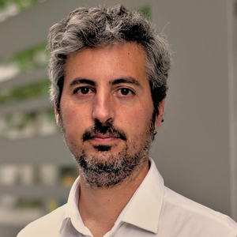

Diego Naranjo
Lawyer, Policy Advocate, Digital Rights Activist

Here is a selection of some of my talks:
- 19-11-2020
-
The future of encryption in the European Union
- 25-03-2019
-
Video del debate sobre la Directive de copyright con Yolanda Quintana (PDLI), Virginia Díez (Wikimedia), David Bravo y moderado por Lola Sánchez (Eurodiputada, Podemos)
Debate sobre la Directiva de copyright (Podemos, Parlamento Europeo)
- 05-02-2019
-
Video of the panel about upload filters in the copyright Directive debate (starting from 2:58:52
Content Moderation & Removal at Scale (ALDE Group, European Parliament)
- 27-12-2018
-
Citzens or subjects? The battle to control our bodies, speech and communications- Video recording
Talk with Andreea Belu (EDRi) at 35C3 (Leipzig, Alemania)
- 20-11-2018
-
Slides of the presentation at the Public Policy Exchange event held in Brussels on 20 November 2018
A New Era for Data Protection: Implementing the European Data Protection Reform- Public Policy Exchange event held in Brussels on 20 November 2018
- 08-11-2018
-
Video recording of my presentation on alternatives to Faebook, Google and Twitter
Event organised at the European Parliament by the GUE Group titled: "Facebook and other social dangers" (My presentation starts at 12:12:18)
- 18-09-2018
-
Slides on EDRi's work on data protection and privacy
Presentation organised by Friedrich-Ebert-Stiftung on 18 September in Brussels
- 12-09-2018
-
Interview at Turkish channel TRT on the vote in Plenary of the copyright Directive
TRT
- 10-05-2018
-
Presentación general en la Universidad de Sevilla sobre privacidad y relaciones laborales
Consejos prácticos
Universidad de Sevilla
- 20-04-2018
-
Slides on the "Rights of the data subject in the context of automated individual decision-making and profiling in the context of the GDPR"
Annual Conference on the EU Data Protection Law on 19-20 April in Brussels
- 19-04-2018
-
Slides for the Privacy Café at BeerMania
Privacy Café (BeerMania, Brussels) organised by by DiEM25
- 12-02-2018
-
Video of the talk about "Tracking at first sight" at the Love at first swipe - EDPS event. Slides available here
European Parliament (Brussels, Belgium, 12 February 2018)
- 29-09-2017
-
Rage Against the Censorship Machine
Copycamp 2017 - The Internet of Copyrighted Things (Warsaw, Poland, 28-29 October 2017)
- 24-06-2017
-
Con ventiquattromila dati- The challenges of the ePrivacy Regulation
eprivacy 2017 summer edition (Lucca, Italy, 23-24 June 2017)
- 01-06-2017
-
Taller sobre Derechos Digitales
Taller sobre Derechos Digitales, Sevilla (Andalucia)
- 10-05-2017
-
Stop the Censorship Machines! How can we prevent mandatory upload filters in the EU? (VIDEO)
re:publica 2017, Berlin (Germany)
- 27-09-2016
-
Presentation of our copyfails campaign at CopyCamp2016
Copycamp 2016, Warsaw (Poland)
- 21-09-2016
-
Copyright Reform Unlocking copyright for users HD
Round table at the European Parliament, Brussels (Belgium)
- 20-09-2016
-
EU’s copyright overhaul, interview with Diego Naranjo
TRT World interview (video), Live interview from Brussels
- 02-09-2016
-
Panel Discussion on Policy Making for personal data
MyData 2017, Helsinki (Finland)
If you have any queries, feel free to contact me either by sending a mail (diego dot naranjo @ edri dot org) or via Twitter (dnbsevilla).